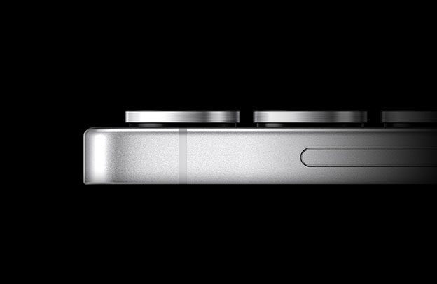

Samsung Galaxy S25
El diseño redondeado del Galaxy S25 Ultra expresa una identidad unificada para la Galaxy S series.
Con su marco de titanio elegante y resistente y un S Pen incorporado, es una visión ultramoderna de un diseño audaz.
Titanio ultrafuerte
Apantallado en un resistente marco de titanio, tu Galaxy S25 Ultra siempre permanece protegido.
Vidrio mas resistente
Reforzado por nuestro duradero vidrio Corning® Gorilla® Armor 2 listo para proteger tu Galaxy.

Resistente al agua
Con una clasificación IP68, la resistencia al agua y al polvo te permite llevar este Galaxy más allá de lo que creías posible.